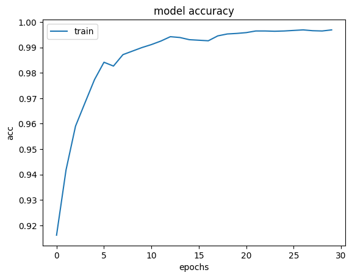
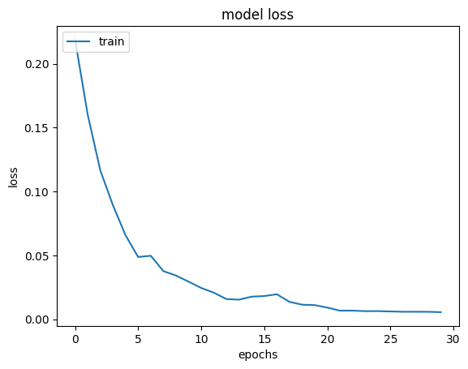
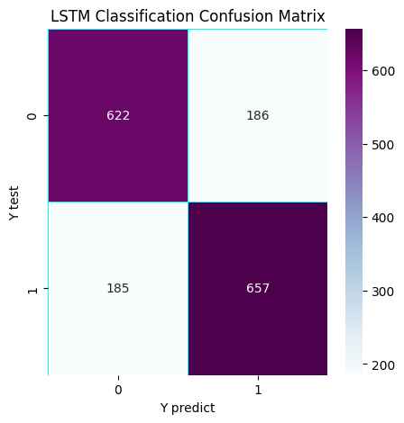
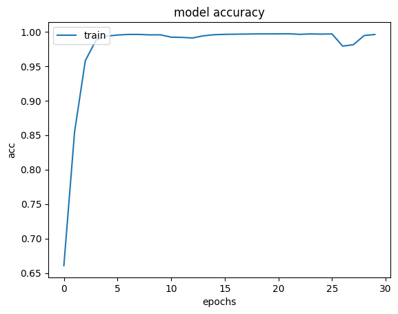
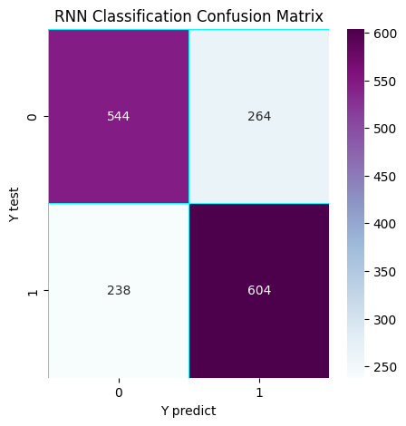

Implemente los algoritmos de clasificación (RNN y LSTM) para el análisis de sentimiento.
import pandas as pd
import sys
import tensorflow.keras
import pandas as pd
import sklearn as sk
import tensorflow as tf
import warnings
warnings.filterwarnings('ignore')
from tqdm import tqdm
from tensorflow.keras.preprocessing.text import Tokenizer
tqdm.pandas(desc="progress-bar")
from gensim.models import Doc2Vec
from sklearn import utils
from sklearn.model_selection import train_test_split
from keras_preprocessing.sequence import pad_sequences
import gensim
from sklearn.linear_model import LogisticRegression
from gensim.models.doc2vec import TaggedDocument
import re
import seaborn as sns
import matplotlib.pyplot as plt
import nltk
from nltk.corpus import stopwords
import numpy as np
---------------------------------------------------------------------------
ModuleNotFoundError Traceback (most recent call last)
Cell In[1], line 3
1 import pandas as pd
2 import sys
----> 3 import tensorflow.keras
4 import pandas as pd
5 import sklearn as sk
ModuleNotFoundError: No module named 'tensorflow'
pip install keras-preprocessing
Collecting keras-preprocessing
Downloading Keras_Preprocessing-1.1.2-py2.py3-none-any.whl.metadata (1.9 kB)
Requirement already satisfied: numpy>=1.9.1 in /usr/local/lib/python3.10/dist-packages (from keras-preprocessing) (1.26.4)
Requirement already satisfied: six>=1.9.0 in /usr/local/lib/python3.10/dist-packages (from keras-preprocessing) (1.16.0)
Downloading Keras_Preprocessing-1.1.2-py2.py3-none-any.whl (42 kB)
?25l ━━━━━━━━━━━━━━━━━━━━━━━━━━━━━━━━━━━━━━━━ 0.0/42.6 kB ? eta -:--:--
━━━━━━━━━━━━━━━━━━━━━━━━━━━━━━━━━━━━━━━━ 42.6/42.6 kB 3.6 MB/s eta 0:00:00
?25hInstalling collected packages: keras-preprocessing
Successfully installed keras-preprocessing-1.1.2
df = pd.read_csv('/content/dataset.tsv', sep='\t', header=None)
df.columns = ["Sentiment", "Comment"]
df.head()
| Sentiment | Comment | |
|---|---|---|
| 0 | neg | ab achanak khawaja saad rafique ko khiyaal aa... |
| 1 | neg | adha drama to censor hi hojaye gaa , khaas to... |
| 2 | neg | bekaar fuzool end !!!!! moti budhi laila jeet... |
| 3 | neg | choor kasuri choor jhootay ka moo kaala |
| 4 | neg | gali gali mein shor hai gaaanjaaaa shair chor... |
Modelo LSTM#
from keras.models import Sequential
from keras.layers import LSTM, Dense, Embedding, SimpleRNN
from tensorflow.keras.optimizers import Adam
import os
from joblib import dump, load
def tokenize_text(text):
tokens = []
for sent in nltk.sent_tokenize(text):
for word in nltk.word_tokenize(sent):
if len(word) <= 0:
continue
tokens.append(word.lower())
return tokens
X = df['Comment']
Y = pd.get_dummies(df['Sentiment']).values
X_train, X_test, Y_train, Y_test = train_test_split(X, Y, test_size=0.15, random_state=42)
tokenizer = Tokenizer(num_words=5000)
tokenizer.fit_on_texts(X_train)
X_train_seq = pad_sequences(tokenizer.texts_to_sequences(X_train), maxlen=100)
X_test_seq = pad_sequences(tokenizer.texts_to_sequences(X_test), maxlen=100)
model = Sequential()
model.add(Embedding(input_dim=5000, output_dim=128, input_length=100))
model.add(LSTM(64)) # Capa LSTM con 64 unidades
model.add(Dense(Y.shape[1], activation='softmax'))
model.compile(loss='categorical_crossentropy', optimizer='adam', metrics=['accuracy'])
history_lstm = None
if os.path.exists('history_lstm.joblib'):
history_lstm = load('history_lstm.joblib')
print("El archivo 'history_lstm.joblib' ya existe. Se ha cargado el historial del entrenamiento.")
else:
history = model.fit(X_train_seq, Y_train, epochs=30, batch_size=32, verbose=2)
dump(history.history, 'history_lstm.joblib')
print("El entrenamiento se ha completado y el historial ha sido guardado en 'history_lstm.joblib'.")
Epoch 1/30
293/293 - 24s - 81ms/step - accuracy: 0.9161 - loss: 0.2188
Epoch 2/30
293/293 - 43s - 147ms/step - accuracy: 0.9418 - loss: 0.1602
Epoch 3/30
293/293 - 23s - 79ms/step - accuracy: 0.9590 - loss: 0.1166
Epoch 4/30
293/293 - 40s - 136ms/step - accuracy: 0.9682 - loss: 0.0893
Epoch 5/30
293/293 - 45s - 153ms/step - accuracy: 0.9773 - loss: 0.0658
Epoch 6/30
293/293 - 35s - 118ms/step - accuracy: 0.9842 - loss: 0.0487
Epoch 7/30
293/293 - 22s - 75ms/step - accuracy: 0.9827 - loss: 0.0497
Epoch 8/30
293/293 - 41s - 139ms/step - accuracy: 0.9872 - loss: 0.0377
Epoch 9/30
293/293 - 41s - 139ms/step - accuracy: 0.9886 - loss: 0.0342
Epoch 10/30
293/293 - 40s - 137ms/step - accuracy: 0.9899 - loss: 0.0295
Epoch 11/30
293/293 - 32s - 111ms/step - accuracy: 0.9911 - loss: 0.0245
Epoch 12/30
293/293 - 36s - 123ms/step - accuracy: 0.9925 - loss: 0.0208
Epoch 13/30
293/293 - 44s - 152ms/step - accuracy: 0.9942 - loss: 0.0158
Epoch 14/30
293/293 - 36s - 122ms/step - accuracy: 0.9939 - loss: 0.0154
Epoch 15/30
293/293 - 37s - 126ms/step - accuracy: 0.9930 - loss: 0.0177
Epoch 16/30
293/293 - 41s - 140ms/step - accuracy: 0.9928 - loss: 0.0182
Epoch 17/30
293/293 - 41s - 139ms/step - accuracy: 0.9926 - loss: 0.0196
Epoch 18/30
293/293 - 42s - 143ms/step - accuracy: 0.9945 - loss: 0.0136
Epoch 19/30
293/293 - 19s - 64ms/step - accuracy: 0.9953 - loss: 0.0114
Epoch 20/30
293/293 - 23s - 80ms/step - accuracy: 0.9955 - loss: 0.0111
Epoch 21/30
293/293 - 40s - 137ms/step - accuracy: 0.9958 - loss: 0.0091
Epoch 22/30
293/293 - 19s - 65ms/step - accuracy: 0.9965 - loss: 0.0068
Epoch 23/30
293/293 - 22s - 76ms/step - accuracy: 0.9965 - loss: 0.0068
Epoch 24/30
293/293 - 21s - 72ms/step - accuracy: 0.9964 - loss: 0.0064
Epoch 25/30
293/293 - 20s - 67ms/step - accuracy: 0.9965 - loss: 0.0064
Epoch 26/30
293/293 - 21s - 70ms/step - accuracy: 0.9967 - loss: 0.0061
Epoch 27/30
293/293 - 20s - 67ms/step - accuracy: 0.9969 - loss: 0.0059
Epoch 28/30
293/293 - 21s - 72ms/step - accuracy: 0.9966 - loss: 0.0059
Epoch 29/30
293/293 - 19s - 65ms/step - accuracy: 0.9965 - loss: 0.0058
Epoch 30/30
293/293 - 22s - 76ms/step - accuracy: 0.9969 - loss: 0.0056
El entrenamiento se ha completado y el historial ha sido guardado en 'history_lstm.joblib'.
plt.plot(history.history['accuracy'])
plt.title('model accuracy')
plt.ylabel('acc')
plt.xlabel('epochs')
plt.legend(['train', 'test'], loc='upper left');

plt.plot(history.history['loss']);
plt.title('model loss');
plt.ylabel('loss');
plt.xlabel('epochs');
plt.legend(['train', 'test'], loc='upper left');

_, train_acc = model.evaluate(X_train_seq, Y_train, verbose=2)
_, test_acc = model.evaluate(X_test_seq, Y_test, verbose=2)
print('Train: %.3f, Test: %.3f' % (train_acc, test_acc))
print('Train: %.3f, Test: %.4f' % (train_acc, test_acc))
293/293 - 6s - 21ms/step - accuracy: 0.9975 - loss: 0.0048
52/52 - 1s - 22ms/step - accuracy: 0.7752 - loss: 2.2862
Train: 0.998, Test: 0.775
Train: 0.998, Test: 0.7752
yhat_probs = model.predict(X_test_seq, verbose=0)
yhat_classes = np.argmax(yhat_probs, axis=1)
rounded_labels=np.argmax(Y_test, axis=1)
from sklearn.metrics import confusion_matrix
lstm_val = confusion_matrix(rounded_labels, yhat_classes)
f, ax = plt.subplots(figsize=(5,5))
sns.heatmap(lstm_val, annot=True, linewidth=0.7, linecolor='cyan', fmt='g', ax=ax, cmap="BuPu")
plt.title('LSTM Classification Confusion Matrix')
plt.xlabel('Y predict')
plt.ylabel('Y test')
plt.show()

Modelo RNN#
model_RNN = Sequential()
model_RNN.add(Embedding(input_dim=5000, output_dim=128, input_length=100))
model_RNN.add(SimpleRNN(64))
model_RNN.add(Dense(Y.shape[1], activation='softmax'))
model_RNN.compile(loss='categorical_crossentropy', optimizer='adam', metrics=['accuracy'])
history_RNN = None
if os.path.exists('history_RNN.joblib'):
history_RNN = load('history_RNN.joblib')
print("El archivo 'history_RNN.joblib' ya existe. Se ha cargado el historial del entrenamiento.")
else:
history_RNN = model_RNN.fit(X_train_seq, Y_train, epochs=30, batch_size=32, verbose=2)
dump(history.history, 'history_RNN.joblib')
print("El entrenamiento se ha completado y el historial ha sido guardado en 'history_RNN.joblib'.")
Epoch 1/30
293/293 - 12s - 41ms/step - accuracy: 0.6606 - loss: 0.6036
Epoch 2/30
293/293 - 9s - 31ms/step - accuracy: 0.8547 - loss: 0.3467
Epoch 3/30
293/293 - 12s - 41ms/step - accuracy: 0.9580 - loss: 0.1254
Epoch 4/30
293/293 - 11s - 36ms/step - accuracy: 0.9877 - loss: 0.0459
Epoch 5/30
293/293 - 18s - 63ms/step - accuracy: 0.9936 - loss: 0.0264
Epoch 6/30
293/293 - 11s - 36ms/step - accuracy: 0.9952 - loss: 0.0182
Epoch 7/30
293/293 - 11s - 36ms/step - accuracy: 0.9960 - loss: 0.0164
Epoch 8/30
293/293 - 21s - 71ms/step - accuracy: 0.9960 - loss: 0.0157
Epoch 9/30
293/293 - 20s - 69ms/step - accuracy: 0.9954 - loss: 0.0167
Epoch 10/30
293/293 - 20s - 67ms/step - accuracy: 0.9955 - loss: 0.0160
Epoch 11/30
293/293 - 11s - 38ms/step - accuracy: 0.9921 - loss: 0.0260
Epoch 12/30
293/293 - 11s - 36ms/step - accuracy: 0.9918 - loss: 0.0255
Epoch 13/30
293/293 - 20s - 70ms/step - accuracy: 0.9909 - loss: 0.0258
Epoch 14/30
293/293 - 20s - 70ms/step - accuracy: 0.9940 - loss: 0.0174
Epoch 15/30
293/293 - 20s - 70ms/step - accuracy: 0.9956 - loss: 0.0124
Epoch 16/30
293/293 - 11s - 36ms/step - accuracy: 0.9961 - loss: 0.0104
Epoch 17/30
293/293 - 19s - 64ms/step - accuracy: 0.9964 - loss: 0.0095
Epoch 18/30
293/293 - 11s - 36ms/step - accuracy: 0.9966 - loss: 0.0087
Epoch 19/30
293/293 - 20s - 67ms/step - accuracy: 0.9968 - loss: 0.0082
Epoch 20/30
293/293 - 9s - 31ms/step - accuracy: 0.9968 - loss: 0.0079
Epoch 21/30
293/293 - 12s - 41ms/step - accuracy: 0.9969 - loss: 0.0082
Epoch 22/30
293/293 - 10s - 35ms/step - accuracy: 0.9970 - loss: 0.0073
Epoch 23/30
293/293 - 19s - 64ms/step - accuracy: 0.9961 - loss: 0.0081
Epoch 24/30
293/293 - 11s - 36ms/step - accuracy: 0.9968 - loss: 0.0072
Epoch 25/30
293/293 - 11s - 36ms/step - accuracy: 0.9965 - loss: 0.0077
Epoch 26/30
293/293 - 19s - 66ms/step - accuracy: 0.9968 - loss: 0.0071
Epoch 27/30
293/293 - 11s - 39ms/step - accuracy: 0.9790 - loss: 0.0544
Epoch 28/30
293/293 - 24s - 82ms/step - accuracy: 0.9812 - loss: 0.0538
Epoch 29/30
293/293 - 17s - 57ms/step - accuracy: 0.9944 - loss: 0.0164
Epoch 30/30
293/293 - 19s - 63ms/step - accuracy: 0.9959 - loss: 0.0087
El entrenamiento se ha completado y el historial ha sido guardado en 'history_RNN.joblib'.
plt.plot(history_RNN.history['accuracy'])
plt.title('model accuracy')
plt.ylabel('acc')
plt.xlabel('epochs')
plt.legend(['train', 'test'], loc='upper left');

plt.plot(history_RNN.history['accuracy'])
plt.title('model accuracy')
plt.ylabel('acc')
plt.xlabel('epochs')
plt.legend(['train', 'test'], loc='upper left');
_, train_acc = model_RNN.evaluate(X_train_seq, Y_train, verbose=2)
_, test_acc = model_RNN.evaluate(X_test_seq, Y_test, verbose=2)
print('Train: %.3f, Test: %.4f' % (train_acc, test_acc))
293/293 - 2s - 8ms/step - accuracy: 0.9973 - loss: 0.0060
52/52 - 0s - 8ms/step - accuracy: 0.6958 - loss: 1.6036
Train: 0.997, Test: 0.6958
yhat_probs = model_RNN.predict(X_test_seq, verbose=0)
yhat_classes = np.argmax(yhat_probs, axis=1)
rounded_labels=np.argmax(Y_test, axis=1)
RNN_val = confusion_matrix(rounded_labels, yhat_classes)
f, ax = plt.subplots(figsize=(5,5))
sns.heatmap(RNN_val, annot=True, linewidth=0.7, linecolor='cyan', fmt='g', ax=ax, cmap="BuPu")
plt.title('RNN Classification Confusion Matrix')
plt.xlabel('Y predict')
plt.ylabel('Y test')
plt.show()
